Which request gets the next token?
An analogy for live state and work in progress, not a drawing of GPU architecture.
“I forgot my password and cannot sign in to my account.” Gold label: access.
“I can log in, but clicking Export crashes the application.” Gold: bug. Context and generated length are different quantities.
| Quantity | Meaning | Not equal to |
|---|---|---|
| Clients | Requests submitted or in flight | Scheduled sequences |
| Sequences | Eligible live request states | New tokens this iteration |
| Tokens | Positions scheduled this iteration | Physical KV blocks |
| KV blocks | Capacity/storage units | GPU thread blocks |
Placement · iteration · evidence
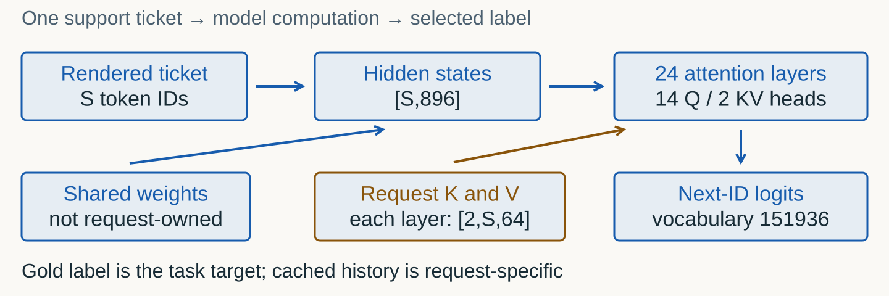
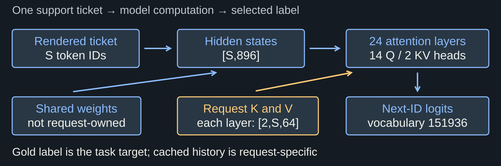
Prefill computes KV for the input and predicts the first output ID. That ID enters KV when consumed by a later forward.
Prompt plus output cap is a useful conservative position budget, not an exact instantaneous cache length.
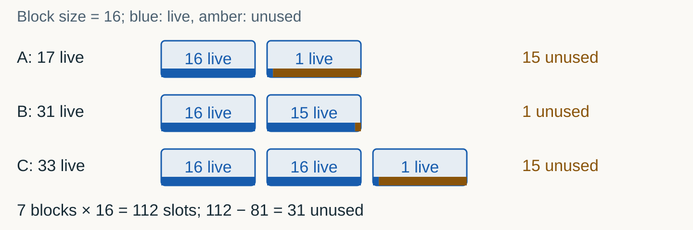
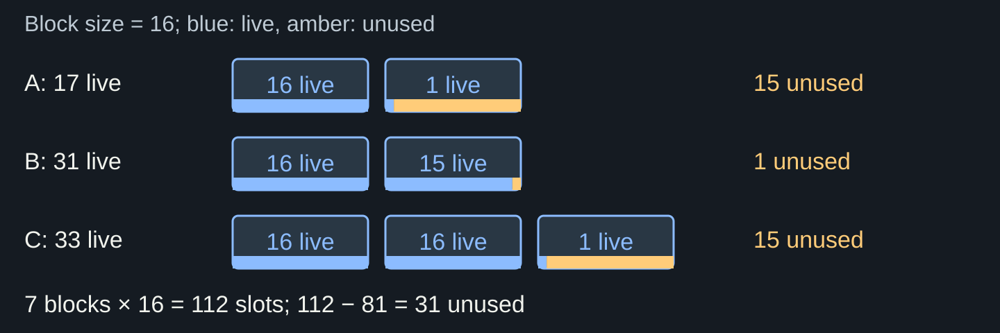
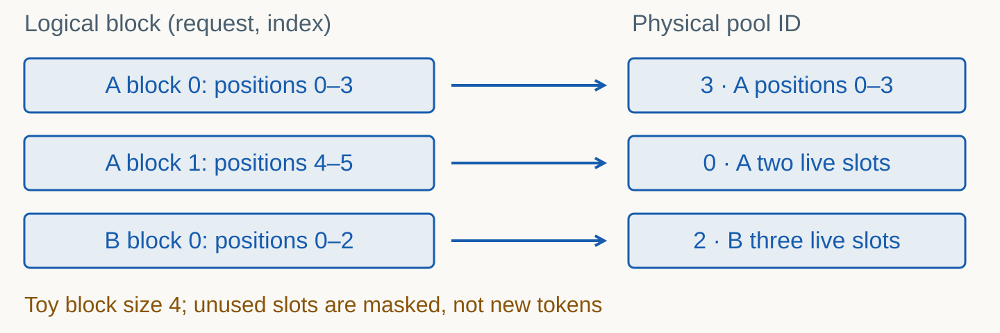
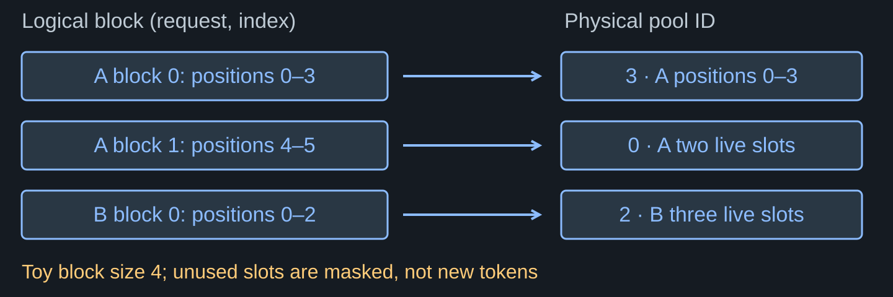
| Effect | Where it occurs | What to inspect |
|---|---|---|
| Padding | Dense static tensor batches | Masks and padded tensor shape |
| Unused tails | Partially live KV blocks | Live positions versus capacity |
| Reserved pool | Engine/allocator policy | Pool capacity versus live occupancy |
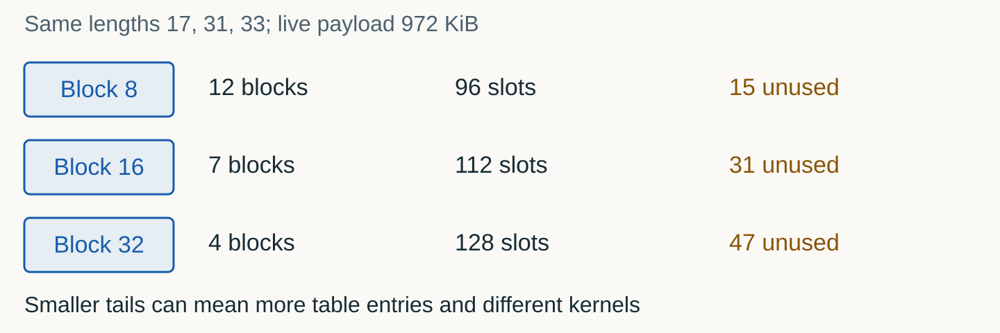
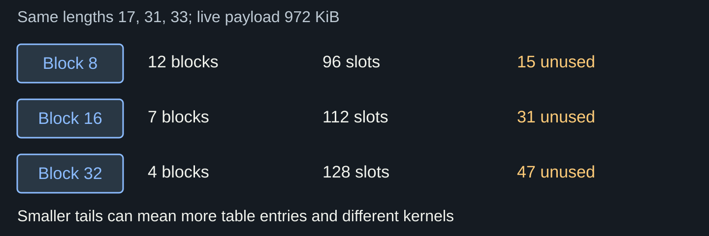
Finishing releases request references. Shared live pages cannot be overwritten while another owner needs them.
The engine may retain an allocated KV pool for reuse. Cached, unreferenced prefixes can be evictable rather than absent.
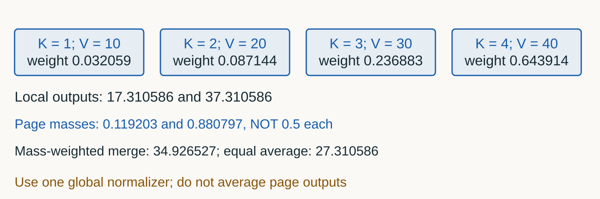
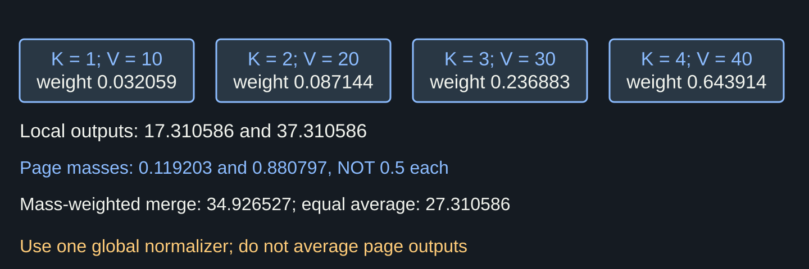
Why does “two pages” not mean “two independent softmaxes”? Use the denominator, not “the GPU knows”.
Reading B’s keys as A’s cache changes the population. Permuting A’s correctly paired keys and values is not the same error.
Placement · iteration · evidence
The next input ID depends on the previous selected output. Five decode steps remain dependent.
Independent sequences can contribute work to the same iteration. Finishing one need not hold all others.
| Request | Arrival tick | Decode steps |
|---|---|---|
| A | 0 | 5 |
| B | 0 | 1 |
| C | 0 | 1 |
| D | 2 | 2 |
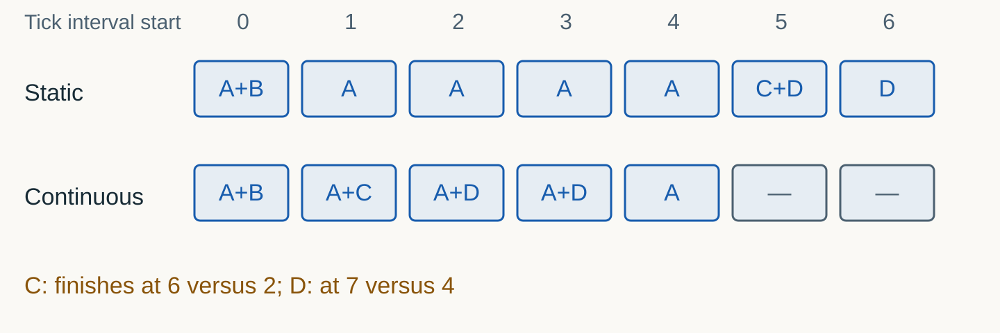
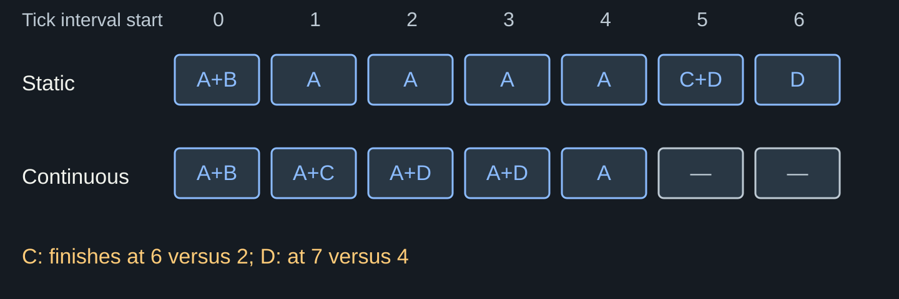
| Request | Static residence | Continuous residence |
|---|---|---|
| A | 5 − 0 = 5 | 5 − 0 = 5 |
| B | 1 − 0 = 1 | 1 − 0 = 1 |
| C | 6 − 0 = 6 | 2 − 0 = 2 |
| D | 7 − 2 = 5 | 4 − 2 = 2 |
Makespan 7 versus 5 equal-cost ticks; idle slot-ticks 5 versus 1. This explains opportunity for useful work.
If the new iteration cost doubled, 5×2 could exceed 7×1. Actual batch shape, memory reads and kernel overhead must be measured.
Three ordinary decode positions use 3 tokens. A 300-position prefill has 253 budget positions left this iteration.
Chunked prefill and KV availability affect eligibility. A sequence limit and a scheduled-token limit are different knobs.
| Constraint | Possible symptom | Different from |
|---|---|---|
| Sequence limit | Waiting request despite KV room | Token budget |
| Token budget | Prefill split across iterations | Sequence count |
| KV capacity | Preemption/recomputation | Model weights |
| Long iteration | Decode delay during prefill | Transport failure |
Placement · iteration · evidence
| Keep fixed | Why | Inspect |
|---|---|---|
| Model/revision/dtype | Same treatment target | Identity ledger |
| Rendered token IDs | Same actual inputs | Tokenizer/template ledger |
| Cap and EOS policy | Comparable work limits | Actual generated IDs |
| Population/repeats/warmup | No cherry picking | Every attempt and clocks |
For this declared workload, one complete stack completed a different amount of work or used different resources.
“PagedAttention caused every millisecond of speedup.” Kernels, packing, cache policy, scheduling and framework overhead also differ.
| Quantity | Numerator / denominator | Limit |
|---|---|---|
| Cohort throughput | Completed requests / cohort wall seconds | Not individual E2E latency |
| Generated-ID rate | Declared output count / wall seconds | EOS/token accounting must agree |
| Task accuracy | Correct / all attempted requests | Keep failures and invalid outputs |
| TTFT | First-content arrival − client start | Requires actual streaming capture |
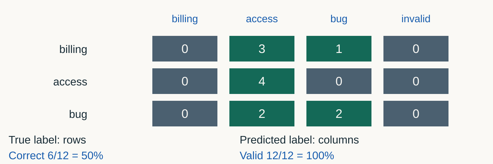
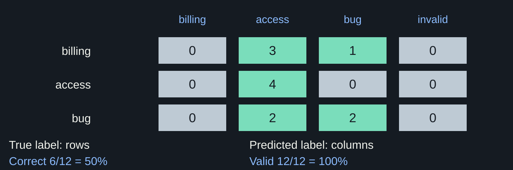
Implement independent block accounting and arrival-aware FIFO. Keep both traces and explain global attention.
Change submitted offline burst size 1 versus 4. Predict, retain all outputs, compare quality and whole-stack cohort rate, then justify a decision. Exact-code technical rehearsal passed; learner validation remains pending.
| Failure | Action | Do not |
|---|---|---|
| Resource shortage | Report observed headroom; stop before allocation | Lower a judge gate |
| OOM/timeout | Retain partial files and owned logs | Relabel as complete |
| Missing native counters | Preserve capture limitation; fresh attempt | Reconstruct counters |
| Wrong task output | Keep literal output; report quality separately | Repair the model answer |
Which request is eligible? Which evidence would show that the intervention helped?
What changed? What stayed fixed? Which evidence supports the claim?